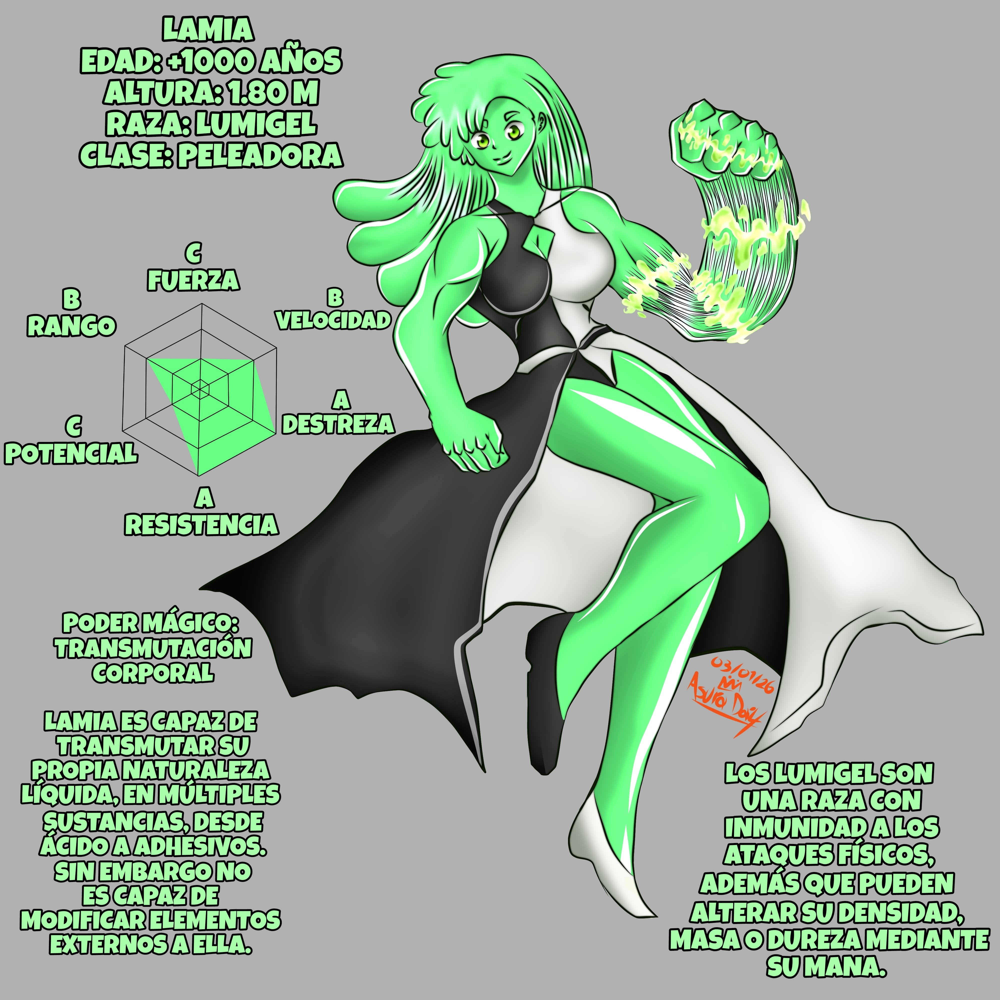

La guerrera Lamia, la mejor amiga y compañera de la madre de Invicto
“Miriel”. Tras la disolución de su grupo al término de la guerra,
fundó una taberna en la ciudad de los guerreros con varias
de sus ex camaradas de armas.
Fue ella quien sembró la idea en Miriel de enseñarle Magia a
Invicto y en ocasiones
fue compañera de sparring del mismo. Cuando se enteró de la muerte de su amiga,
ofreció a su hijo guiarlo por el camino del guerrero, oferta que este declinó.
Ofrecería su apoyo a la hechicera Diana en su búsqueda de su hermano,
proporcionándole una base y miembros para su grupo, entre ellos a su discípula
quien pertenece a su misma raza. Su especie suele ser bastante feral aunque
existen intelectuales como ella. Su forma de reproducción es mediante la división
(Mitosis) Los individuos generados comparten los recuerdos y experiencias
del original aunque su poder mágico se ve dividido. Es capaz de regenerarse y de
aumentar su masa mediante el mana. En la guerra contra CAOS, fue de vital
importancia y se encargaría de hacerle frente a la legendaria Escila renacida.
Habilidades destacadas:
Regeneración acelerada (Puede hacerlo hasta agotar su mana)
Creación de mortales sustancias desde corrosivas a nocivas.
Invulnerabilidad a los ataques físicos.
Elevadas habilidades de camuflaje y ocultamiento.
Liderazgo y carisma avasallantes.